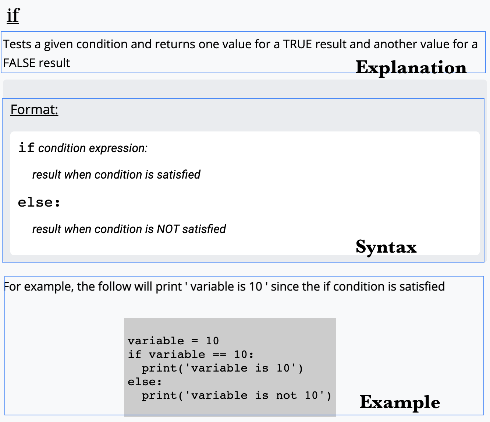
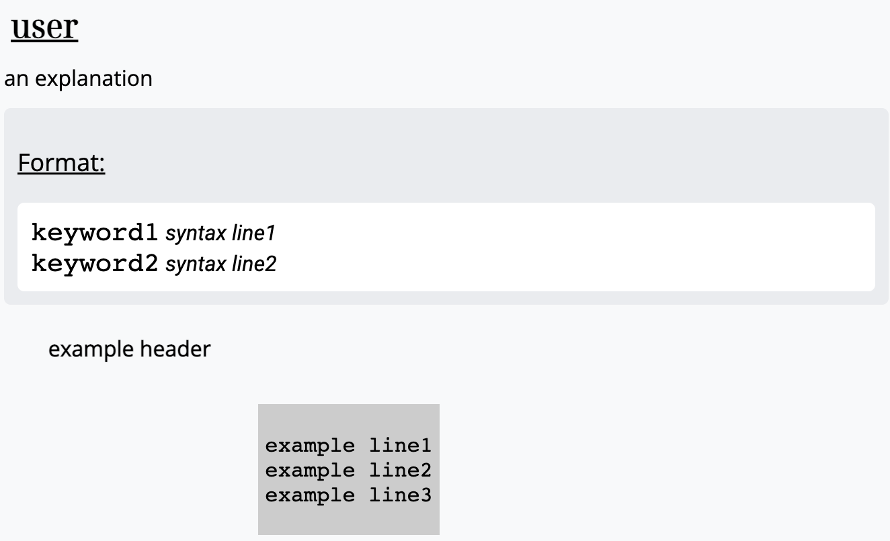

the popup information box includes the keyword definition explanation, syntax, as well as an example
contains 'if' and 'loop' templet boxes by default
 please attache additional classname 'target' to hyperlink keyword
<div class ='block if-block'>
<a class='target' href="">If</a>
</div>
please also provide target block position when using programmer.js.
(target in the following example)
If the target keyword is 'if' or 'loop', try to use default templet: just simply provide with 'if' or 'loop' as keyword
const target = document.querySelector('.if-block')const ifprogrammer = new Programmer('if')ifprogrammer.makeInfoBox(target, ifprogrammer.type)const target2 = document.querySelector('.loop-block')const loopprogrammer = new Programmer('loop')loopprogrammer.makeInfoBox(target2, loopprogrammer.type);if you wish to create your own infobox, create Programmer like this:
const target3 = document.querySelector('.user-block')const userprogrammer = new Programmer('user', 'explanation',['example header', 'example line1\n', 'example line2\n', 'example line3\n'], [['keyword1'], ' syntax line1\n',['keyword2'], ' syntax line2\n'])userprogrammer.makeInfoBox(target3, userprogrammer.type)
example and syntax must be arrays. Use subarrays to indicate keywords (keyword1 in the above example)
You can modify explanation, example and syntax
userprogrammer.changeExplanation("new explanation for if")userprogrammer.changeExample(['new example header','new example line1\n'])userprogrammer.changeSyntax([['keyword1'], ' syntax line1\n'])
please attache additional classname 'target' to hyperlink keyword
<div class ='block if-block'>
<a class='target' href="">If</a>
</div>
please also provide target block position when using programmer.js.
(target in the following example)
If the target keyword is 'if' or 'loop', try to use default templet: just simply provide with 'if' or 'loop' as keyword.
const target = document.querySelector('.if-block')const ifprogrammer = new Programmer('if')ifprogrammer.makeCodeBox(target, ifprogrammer.type)ifprogrammer.makeResultBox(ifprogrammer.type, ifprogrammer.codebox.answer)const target2 = document.querySelector('.loop-block')const loopprogrammer = new Programmer('loop')loopprogrammer.makeCodeBox(target2, loopprogrammer.type)loopprogrammer.makeResultBox(loopprogrammer.type, loopprogrammer.codebox.answer)
if you wish to create your own codebox, create Programmer like this:
const target3 = document.querySelector('.user-block')const userprogrammer = new Programmer('user',[['keyword1'], ' question1'],[['4'], ' templet line1\n', ' templet line2\n', ['4'],' templet line3\n'], ['ans1', 'ans2'])userprogrammer.makeCodeBox(target3, userprogrammer.type)userprogrammer.makeResultBox(userprogrammer.type, userprogrammer.codebox.answer)
question, templet and answer must be arrays. Use nested array to indicate keyword (keyword1 in the above example). For templet, use nested array to indicate the user input length (['4'] stands for the required user input length should be 4). The number of answers should match the number of input fields.
You can modify question, templet and answer. changeTemplet function only changes templet but not answer. If you wish to change answer, you can call changeExercise with both new templet and answer provided
userprogrammer.changeQuestion([' question1\n', ['keyword1']])userprogrammer.changeTemplet(['templet line1\n', ['4']])userprogrammer.changeExercise({'code':['templet line1\n', ['6']], 'answer':['newans']})
please attache additional classname 'target' to hyperlink keyword
<div class ='block user-block'>
<a class='target' href="">User</a>
</div>
please also provide target block position when using programmer.js.
(target in the following example)
If the target keyword is 'if' or 'loop', try to use default templet: just simply provide with 'if' or 'loop' as keyword.
const target = document.querySelector('.if-block')const ifprogrammer = new Programmer('if')ifprogrammer.makeInfoBox(target, ifprogrammer.type)ifprogrammer.makeCodeBox(target, ifprogrammer.type)ifprogrammer.makeResultBox(ifprogrammer.type, ifprogrammer.codebox.answer)const target2 = document.querySelector('.loop-block')const loopprogrammer = new Programmer('loop')loopprogrammer.makeInfoBox(target2, loopprogrammer.type)loopprogrammer.makeCodeBox(target2, loopprogrammer.type)loopprogrammer.makeResultBox(loopprogrammer.type, loopprogrammer.codebox.answer)
if you wish to create your own infobox and codebox, create Programmer like this:
const target3 = document.querySelector('.user-block')const userprogrammer = new Programmer('user', 'explanation', ['example header', 'example line1\n', 'example line2\n', 'example line3\n'],[['keyword1'], ' syntax line1\n',['keyword2'], ' syntax line2\n'], [['keyword1'], ' question1'],[['4'], ' templet line1\n', ' templet line2\n', ['4'],' templet line3\n'], ['ans1', 'ans2'])userprogrammer.makeInfoBox(target3, userprogrammer.type)userprogrammer.makeCodeBox(target3, userprogrammer.type)userprogrammer.makeResultBox(userprogrammer.type, userprogrammer.codebox.answer)
example, syntax, question, templet and answer must be arrays. Use nested array to indicate keyword (keyword1 in the above example). For templet, use nested array to indicate the user input length (['4'] stands for the required user input length should be 4). The number of answers should match the number of input fields.
You can modify explanation, example, syntax, question, templet and answer. changeTemplet function only changes templet but not answer. If you wish to change answer, you can call changeExercise with both new templet and answer provided
userprogrammer.changeExplanation("new explanation for if")userprogrammer.changeExample(['new example header','new example line1\n'])userprogrammer.changeSyntax([['keyword1'], ' syntax line1\n'])userprogrammer.changeQuestion([' question1\n', ['keyword1']])userprogrammer.changeTemplet(['templet line1\n', ['4']])userprogrammer.changeExercise({'code':['templet line1\n', ['6']], 'answer':['newans']})